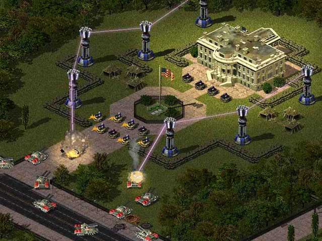

Prism Forwarding¶
In this pre-release screenshot for Red Alert 2, Prism Towers are seen to feed their energy from one tower to another along a whole chain of towers. This, of course, is not possible in the released game (which suggests that this screenshot has been doctored).
Ares completely replaces the old Prism Tower code to fix a couple of minor bugs and also extend it to provide a full set of Prism networking options.
New in version 0.2.
Quickstart
If all you want to do is keep existing Prism Towers but extend
them to multiple chains like in the pre-release screenshot above, simply set
[ATESLA]►PrismForwarding.MaxChainLength=3 or the number of
backward-links you would like (-1 for infinite).
[BuildingType]►PrismForwarding=(enumeration - yes|no|forward|attack)Specifies whether or not this building is a Prism Tower.
PrismForwarding=forwardmeans that this building can support other towers but cannot attack as a Prism Tower.PrismForwarding=attackmeans that this building can attack as a Prism Tower but cannot support other towers.PrismForwarding=yesmeans that this building is a fully fledged Prism Tower - it can support other towers or attack.PrismForwarding=nomeans that this building is not a Prism Tower and will not be included in any prism networks.
Defaults to yes for the building specified by
[General]►PrismType, defaults to no for all other buildings.[BuildingType]►PrismForwarding.Targets=(list of BuildingTypes)- The list of BuildingTypes that this tower can support. Defaults to just the building type itself, although don’t forget to mention the building itself if you decide to include this flag.
[BuildingType]►PrismForwarding.MaxFeeds=(integer)- The maximum number of slave (support) towers that can feed directly into this
one (i.e. adjacent towers). -1 means no limit. Defaults to
[General]►PrismSupportMax. [BuildingType]►PrismForwarding.MaxChainLength=(integer)The maximum number of backward links that can precede this tower. -1 means no limit. Default is 1.
In order to achieve what is shown in the pre-release screenshot above, you would need to set this to at least 3.
[BuildingType]►PrismForwarding.MaxNetworkSize=(integer)- If this is the firing tower then
PrismForwarding.MaxNetworkSizeis the total number of towers allowed in the prism network, not including the firing tower itself. Only the firing tower dictates the maximum network size, regardless of what other tower types may be included in the network. -1 means no limit. Defaults to[General]►PrismSupportMax. [BuildingType]►PrismForwarding.SupportModifier=(float - multiplier)- This works in the same way as the old
PrismSupportModifier- it is the amount of multiplier that this tower will contribute to the firing beam. The multiplier accumulates in a linear fashion (i.e. if there are 2 support towers, each withPrismForwarding.SupportModifier=150%, then the total multiplier to damage will be 150% + 150% + 100% = 400%. Defaults to[General]►PrismSupportModifier. [BuildingType]►PrismForwarding.DamageAdd=(integer - damage bonus)A flat damage bonus added to the firing beam before the
PrismForwarding.SupportModifiermultiplier is applied. This can be used instead of the multiplier, or it can be used in conjunction with the multiplier to progressively dial up or down the final damage as more towers are included in the network. Defaults to 0.Note
You will need to limit the number of towers in the network if dialing down the damage bonus, otherwise the firing beam may end up becoming a healing weapon.
You can input your own values into the
Prism Forwarding spreadsheetto see the effect this has on the damage dealt by your prism networks.[BuildingType]►PrismForwarding.ToAllies=(boolean)Whether or not this Prism Tower is allowed to support allied towers. Defaults to no.
Note that, in long-chain prism networks, this tower must be allied with the firing tower as well as the target tower.
[BuildingType]►PrismForwarding.BreakSupport=(boolean)- Whether or not this Prism Tower can abort supporting another tower at the last moment, in order to become a master (firing) tower instead. If a tower does break support, it does not need to restart charging. Defaults to no.
[BuildingType]►PrismForwarding.ChargeDelay= (integer - frames)
Warning
This is for advanced users only!
This option was only really added for testing purposes and doesn’t really enhance the look of the support beam so it is recommended that you ignore this option. In the original game, the master (firing) tower enlists just one slave (support) tower per frame. Each slave tower enlisted begins charging at that time and the master tower restarts charging. This gives the effect of having the slave tower beams arrive in quick succession, rather than all at once. This effect is barely noticeable in-game except at slow speeds or if the network has a large number of towers.
In Ares, this has been changed so that all adjacent slave towers are enlisted on the same frame. That said, a charge delay has been introduced so that the towers do not all appear to start charging immediately. For each backward-chain in the network, the farthest-forward towers begin charging just that little bit later, to give the effect of the beam travelling along the chain. The amount that each tower will delay starting its charge for can be specified by
PrismForwarding.ChargeDelay. This delay accumulates for each chain in the prism forwarding network.So, for example, if
PrismForwarding.ChargeDelay=2and you have a prism chain of 3 towers then the farthest tower (tower 3) will begin charging immediately, the middle tower (tower 2) will begin charging after 2 frames and the firing tower (tower 1) will begin charging after a further 2 frames. All towers will be in their charging state on the 4th frame. At firing time, the beams will filter down from the farthest tower to the firing tower. Due to the new way in which the actual power of the beam is transferred across the prism forwarding network, the minimum charge delay is 1, so you cannot have the beams all appear simultaneously. However, at normal game speeds, a charge delay of 1 frame is barely noticeable, unless there is a particularly long chain in the network.Default charge delay is 1. Increase this to have the support beams spread across the network more slowly (not recommended, as large values tend to lower the quality of the effect).
[BuildingType]►PrismForwarding.Intensity=(integer - laser thickness)This allows you to control how thick the laser beam grows as the size of the prism network increases. By default, a firing Prism Tower that is supported by 1 or more other towers would have a
LaserThicknessof 5 - that’s 2 higher than the defaultLaserThicknessof the firing weapon (3). ThePrismForwarding.Intensityflag treats negative values as an absolute addition to the firing beam, so the default value of -2 leaves the behavior exactly the same as the original game.Positive values, on the other hand, tell Ares that you want the thickness of the beam to be dependent on the number of backward chains in the network, and also have the support beam thickness increase in the same way. A
PrismForwarding.Intensityvalue of 1 would cause the farthest beam to have no thickness increase, the next to have an increase of 1, the next to have an increase of 2, and so on. See the section onLaserThicknessfor more information regarding the way lasers are drawn.[BuildingType]►Overpowerable=(boolean)- In the original game, a firing Prism Tower always fires its Primary weapon
(whose damage is multiplied based on the number of supporting towers). The
Overpowerableflag was ignored. Ares allows firing Prism Towers to make use of the overpower logic - you can now have a supported and overpowered Prism Tower at the same time! Note that overpowering a support tower will not have any effect. [BuildingType]►PrismForwarding.SupportWeapon=(weapon)In the original game, the
[PrismSupport]weapon was never referenced directly, and theSecondaryweapon of the Prism Tower was only ever referenced to get theRangethat towers could support over.In Ares, the
Secondaryweapon of the Prism Tower is not referenced at all. Instead, we usePrismForwarding.SupportWeaponto explicitly reference a weapon object from which to get additional settings for the support beam.It isn’t necessary to specify a support weapon - default values will be used if you don’t specify one.
[BuildingType]►PrismForwarding.EliteSupportWeapon=(weapon)- If the tower becomes elite then the support beam will get its properties from
this weapon. Defaults to
PrismForwarding.SupportWeapon.
Customizing The Support Beam¶
The PrismForwarding.SupportWeapon is not a weapon in the traditional
sense and does not actually get fired. Only specific properties of the weapon
are used by the Prism Forwarding system, and these are all described below. Note
that the default values mentioned are only used in the event that you have
not specified a support weapon. If you have specified a support weapon, then the
default values are the same as for any other weapon.
It is not recommended to use the existing [PrismSupport] weapon as a
base. If you want to customize the default values then you should use the
provided example at the end of the following flag list instead.
[PrismForwarding.SupportWeapon]►Range=(integer - cells)- Specifies the maximum range over which the Prism Tower can support another.
This does not affect the final firing range. -2 means infinite range.
If no support weapon is specified then the default support range is the
tower’s
Primaryweapon range plus 1 cell (the extra cell ensures that placing a support tower within the attack radius circle of a firing tower guarantees that the support tower is within support range). This is different to the original game. [PrismForwarding.SupportWeapon]►MinimumRange=(integer - cells)- Specifies the minimum range at which the Prism Tower can support another. This
Prism Tower will not be able to support towers that are closer than
MinimumRange. If no support weapon is specified then there is no minimum support range by default. [PrismForwarding.SupportWeapon]►ROF=(integer - frames)- After a support tower has fired a support beam, it will be unable to fire at a
target or support another Prism Tower for this many frames. If no support
weapon is specified then the default duration is
[General]►PrismSupportDelay. [PrismForwarding.SupportWeapon]►Report=(sound)- The sound to play when a Prism Tower fires a support beam. In the original game, the support beams did not cause a firing sound to be played. Note that lots of Prism Towers firing support beams at once may result in an annoying repetition or loud volume, so you may want to limit the number of instances of the sound and/or use a quieter or more subtle sound. If no support weapon is specified then there is no firing sound for the support beam by default.
[PrismForwarding.SupportWeapon]►IsLaser=(boolean)- Specifies whether or not a laser beam should be drawn when supporting another
tower. The other laser controls (
LaserDuration,IsHouseColor,LaserInnerColor,LaserOuterColor,LaserOuterSpreadandLaserThickness) are also respected. If no support weapon is specified then the traditional support laser will be drawn (IsLaser=yes,LaserDuration=[General]PrismSupportDuration,IsHouseColor=yes,LaserThickness=3). [PrismForwarding.SupportWeapon]►IsElectricBolt=(boolean)- Specifies whether or not an electric bolt should be drawn when supporting
another tower. The other electric bolt controls (
IsAlternateColor,Bolt.Color1,Bolt.Color2andBolt.Color3) are also respected. If no support weapon is specified then no electric bolt will be drawn. [PrismForwarding.SupportWeapon]►IsRadBeam=(boolean)- Specifies whether or not a rad beam should be drawn when supporting another
tower. The other rad beam controls (
Beam.Duration,Beam.IsHouseColor,Beam.ColorandBeam.Amplitude) are also respected. If no support weapon is specified then no rad beam will be drawn.
No other properties of the support weapon are referenced at present, however this could be changed in the future.
Example support weapon:
[NewPrismSupportBeam]
Range=9 ;or 8 if you prefer the original
ROF=45
IsLaser=yes
IsHouseColor=yes
LaserDuration=15
LaserThickness=3
Support Beam FLH¶
The firing origin of the support beam can be set by using the FLH controls on
the building’s art entry - AlternateFLH0 specifies the rookie support
beam origin, AlternateFLH1 specifies the elite support beam origin. If
either of these is set to 0,0,0 (the default FLH value) then they will
fall back to using PrimaryFireFLH or ElitePrimaryFireFLH, as
appropriate.
Prism Tower Limitations¶
Prism Towers should not be allowed to undeploy - undeploying a Prism Tower during a charge sequence can cause an Internal Error.
Special Note Regarding Prism Forwarding¶
A common error that was reported during testing was a tendency for Prism Towers to not auto-target and engage enemy units. The solution for this was to be sure that warhead and/or damage was defined. If this happens to you, be sure to check that your PF modification defines warhead values or damage values. (Bug #896095)